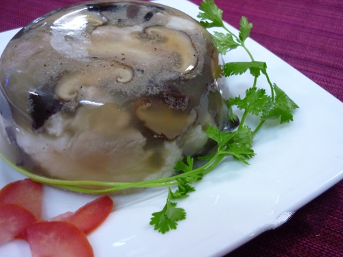

Thịt đông

- Khẩu phần 4
- Chuẩn bị 20 phút
- Thực hiện 60 phút
Nguyên liệu
- 1kg chân giò heo rút xương
- 300g thịt đầu heo
- 50g nấm mèo
- 1 thìa cà phê tiêu đập giập
- 2 thìa cà phê Hạt nêm từ Thịt Thăn, Xương
Ống và Tủy - Bổ sung Vitamin A - Bổ sung Vitamin A
- 1 thìa cà phê đường
- 2 thìa súp Nước mắm chấm
- 2 lít nước
Hướng dẫn thực hiện
- Chân giò, thịt đầu cạo lông, cho vào nước muối rửa sạch, để ráo, cắt
miếng dày khoảng 1cm. Nấm mèo ngâm nở, cắt bỏ chân, thái sợi to
- Nấu nước vừa nổi bọt lăn tăn, nêm Nước mắm chấm , Hạt nêm từ Thịt
Thăn, Xương Ống và Tủy - Bổ sung Vitamin A, đường, tiêu (nêm đậm hơn luộc
nhưng nhạt hơn kho) rồi cho thịt vào nồi. Nấu đến khi thịt mềm và nước sánh
lại là được. Cho nấm mèo vào, tắt bếp
- Múc thịt vào bát hoặc vào hộp nhựa tròn. Chờ thịt đông lại cho vào tủ
mát dùng dần. Ăn kèm với dưa cần hoặc cải chua, chấm nước mắm sống pha ớt
rất ngon.